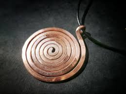
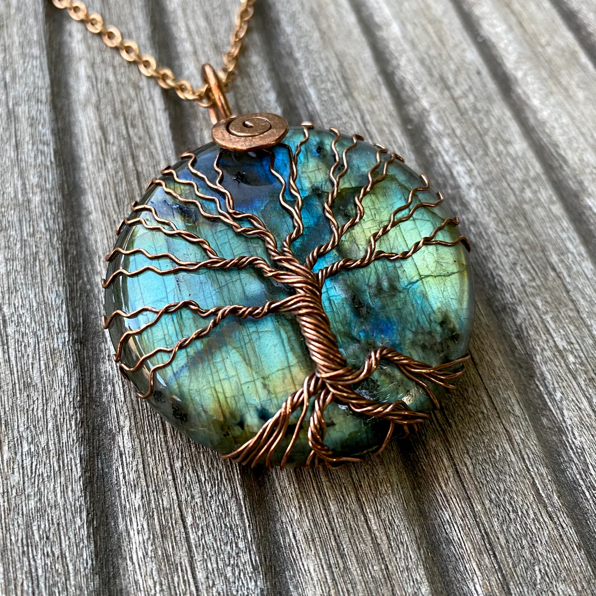
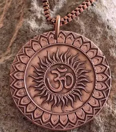

ÉnergétiqueSpirale d'Harmonisation
Une pièce maîtresse pour rééquilibrer les énergies d'une pièce. Cuivre pur martelé à froid.
85€
Contactez-moi
Des pièces uniques façonnées à la main, alliant esthétique et conductivité énergétique.
Le cuivre est bien plus qu'un simple métal esthétique. Utilisé depuis l'Antiquité, il possède des propriétés physiques et vibratoires uniques qui agissent directement sur notre équilibre général.
En physique comme en énergétique, le cuivre favorise la libre circulation des flux. Il aide à lever les blocages et réharmonise les énergies stagnantes de votre corps et de votre habitat.
Porter du cuivre au contact de la peau (comme nos bijoux) est traditionnellement reconnu pour soulager les raideurs et les inconforts articulaires grâce à ses vertus apaisantes.
Le cuivre possède des propriétés naturelles qui aident à purifier l'environnement. Dans une pièce, nos créations agissent comme un filtre bienveillant pour adoucir l'ambiance.

ÉnergétiqueUne pièce maîtresse pour rééquilibrer les énergies d'une pièce. Cuivre pur martelé à froid.

DécorationSculpture délicate réalisée en fils de cuivre torsadés sur un socle de pierre naturelle. Favorise la circulation des énergies dans votre foyer.

BijouPortez la protection du cuivre au quotidien. Tissage délicat et finition satinée.